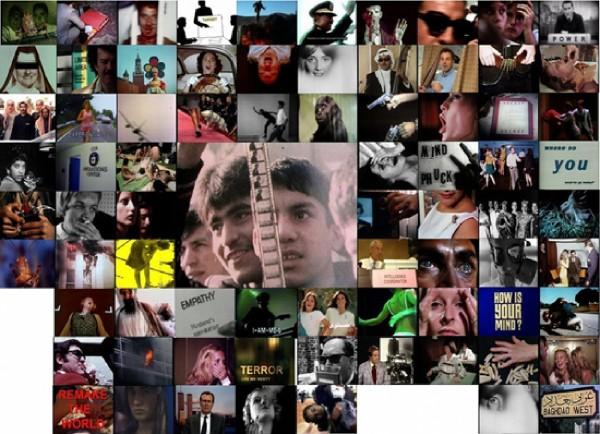

-
They Do Not Know It, But They Are Doing It
by Erin Nixon March 19, 2012
Collage of Film Stills, courtesy of Adam Curtis.
“Adam Curtis is not an artist, but a television journalist,” notes Hans Ulrich Obrist in his press release for the Adam Curtis retrospective at e-flux through April 14th. Obrist’s decision to show the work of Curtis serves a timely and important function: to break down what divides art and political reportage as both disciplines struggle to make sense of our current political and economic uncertainty. As Obrist notes, many artists have become interested in Curtis’ work, which combines avant-garde filmmaking and journalistic investigation, offering a radical critique of the contemporary world that not only analyzes the ideologies that shape our world but counters them formally. Similar to the way that early 20th century artists opposed to traditional art made “anti-art,” Curtis makes anti-propaganda films by subverting the political documentary.
While appearing at first to be traditional “compilation films,” using archival and stock footage primarily from the BBC library, Curtis’ cinema deploys these fragments in unexpected ways, juxtaposing imagery from the past to give voice to the present.
Since he began his career in the early 1990s, Curtis’ ambition has been to trace the shifting ideologies that have created contemporary politics. What he challenges first and foremost is the idea that the center of real power lies in the realm of electoral politics. His films illustrate how power is dispersed in the technocratic realms of science, technology, business, psychology, advertising, and public relations. Curtis dissects the workings of modern political power by piecing together jokes, referential clips, storytelling, and displays of emotion with camp television techniques. In this unhinging of the traditional documentary style, he reveals to the viewer what is hidden behind the standard narratives of Western culture.
In his series The Trap, Curtis takes on the ultimate ideal at the heart of our age: individual freedom. The series tells how economists adapted John Nash’s paradigm for human behavior during the Cold War and generated economic models based on the idea that various self-interests would balance each other, a progression of Nash’s idea that a society based on individualism wouldn’t degenerate into chaos. This theory has had serious implications in the structure of liberal democracy because, for all intents and purposes, it also applies to those in political power. These ‘public servants’ act as self-interested agents and the idea of public duty becomes an illusion used to build their empires. The myth of serving by the will of the people is an abstract concept shaped by the turn to market-based gauges of public sentiment. Politicians claim markets interpret the will of the people, but markets are used, in reality, as an instrument of social control. This ideology, neo-liberalism, employs a narrative in which the market is said to be synonymous with democracy and attempts to control it are seen as grave threats to freedom. As David Harvey put it, neo-liberalism functions as “a political project to re-establish the conditions for capital accumulation and to restore the power of economic elites.”
If neoliberals view society as a set of atomized, self-interested individuals, Curtis’ Century of the Self looks into what has shaped this idea of the individual. In an interview with Ulrich Obrist, Curtis said that individual experience is the “great dialectic of our time” and his work is pursuing an “interest in the relationship between the dreams of individuals and what the great currents of society and history do to those dreams.” Century of the Self traces how the desire of the individual came to rest at the center of our society. It begins with early psychoanalysts who were driven by the belief that humans were irrational beings, a premise that was adopted by corporations that set out to sell products by linking them to unconscious desires. The nephew of Sigmund Freud, Edward Bernays invented the discipline of public relations and was the pivotal figure for this propaganda of commerce. The idea was to create emotional connections to products or services, transforming irrelevant objects into powerful personal symbols. Using the tenets of psychoanalysis, America was transformed from a ‘needs’ to a ‘desires’ culture, and trained in just what those desires would be. While stoking our lust for material goods, individualism was also a very conscious political project designed to push people away from collectivity.
The weakening of collective will was, perversely, exacerbated by the cynicism of leftist intellectuals. Figures like Herbert Marcuse wrote that the alluring images and sounds of consumer culture could crawl into your brain and shape the way you saw the world while disguising and distracting from your exploitation. Such writing conditioned a liberal pessimism that produced a distrust of all dreams of the future. It made capitalism seem insurmountable in the minds of the revolutionaries, becoming for them a fiendish force that could take any authentic part of human experience and turn it into a tool of psychological manipulation.
Film Still from "It Felt Like A Kiss", 2009
In The Power of Nightmares, perhaps his most popular film, Curtis traces two other enemies of collectivity. Nightmares documents the simultaneous rise of the neo-conservative movement and the radical Islamist movement to show how those in power create the phantasms from which they must protect people, and hence restore their authority in the name of protection. The movie shows how the political status quo now uses fear as a mobilizing principle, manipulating the shorthand of good and evil to provide the public with moral certainties.
If Curtis makes us feel that we are enlightened it is by revealing the tectonic forces that have shaped contemporary life. Curtis discards and distorts the spectacles of ideology, crafting complex political reportage in which trash television techniques are the tools that both mimic and expose the absurdity of power. Curtis wades through the past collaging fragments in order to posit a plausible form of alternative politics.
Adam Curtis: The Desperate Edge of Now, curated by Hans Ulrich Obrist, is on view through April 14th at e-flux, 311 East Broadway, New York, NY 10002.